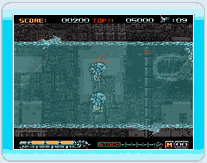
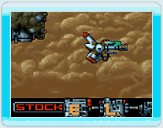
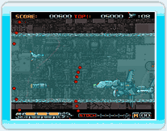

5 |
はじめに |
 |
● PHALANXとは このゲームは、X68000版 PHALANXをWiiWare用にオリジナルリメイクしたシューティングゲームです。
プレイヤーは 「A-144PHALANX」を操り、謎の外宇宙生命体と戦います。
・様々な装備を駆使して戦え！ 「A-144PHALANX」の武器には様々な種類があります。それぞれの武器の特徴をいかして敵と戦いましょう。
Wii版では前作で出来なかった装備の変更ができるようになっています。うまくつかいこなしてみましょう。
・ステージをクリアしよう！ ステージ数は全部で８つ。さらにシークレットエリアがあるステージもあります。 中ボスも出現するので、うまくクリアして先に進みましょう。新たなシークレットエリアもあるかも？
 ・ボス戦に挑め！ 各ステージの最後にはボスが待ち構えています。ボスを倒せばステージクリアです。 ボスの動きをよく見て、攻撃をかわしましょう。 |
 |
 |
 |